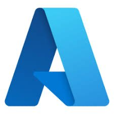
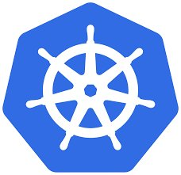

AI Engineer. I build production LLM systems and autonomous mission architectures — published RAG research, shipped at Draper, PhD research in SAR command & control. Looking to join an early-stage team in SF.
Production RAG system for automated document quality analysis. Claude 3 Sonnet + FAISS vector search + real-time streaming web UI. Validated on 50MB+ document corpora with sub-15s latency; selected for internal productization targeting TB-scale deployment.
Simulation framework for search and rescue drone operations — command and control architectures, mission effectiveness modelling, and autonomous decision-making under uncertainty.
Full-system paper covering end-to-end RAG architecture, evaluation methodology, chunking strategies, and agentic reasoning pipeline — extending the conference work into a complete system description.
MS ECE completed 2025 (Draper Scholar). BS ECE 2024, CS Minor. Active research: command and control architectures for SAR drone operations and mission effectiveness modelling.
Claude, GPT-4, AWS Bedrock API · RAG Systems · FAISS, Pinecone · Prompt Engineering · Chain-of-Thought · Pydantic · Function Calling · Embeddings · PyTorch · TensorFlow
Python (expert) · C++ · FastAPI · Flask · Django · Microservices · Async/Await · REST APIs · GraphQL
AWS Bedrock / Lambda / S3 / EMR · Azure · Docker · Kubernetes · Terraform · Serverless · IaC
PySpark · Apache Airflow · ETL Pipelines · SQL · NoSQL · Prometheus · Grafana · Telemetry


I'm actively looking for AI engineer roles at early-stage teams in SF. If you're building with LLMs, RAG, or autonomous systems — reach out.